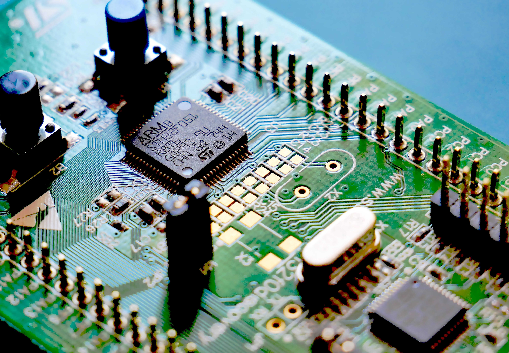

Imágenes
ni nombre es alessandra Esta es mi página del Web. No es muy extensa, pero tiene todos los elementos básicos. Espero que les guste. Poco a poco le iré añadiendo más cosas interesantes.
Mis aficiones
me gusta la tecnogia la musicas electronia electrodance otra de mis afisioneses la fotografia estracta y la naturalesa
Mi postre favorito
me gusta la tarta de fresa y el heldo
megusta la informatica
 Qué es Informática:
Informática es el tratamiento automático de la información. Como tal, la informática designa a un conjunto de conocimientos teóricos y prácticos, relativos al ámbito de la ciencia y de la tecnología, que se combinan para posibilitar el tratamiento racional y automático de la información mediante sistemas informáticos o computadoras. Utilidad de la informática
La informática nos posibilita el manejo rápido y eficiente de enormes volúmenes de datos y es clave en el desarrollo de las tecnologías de la comunicación y el internet.
Su grado de utilidad es tal que hoy día no hay prácticamente actividad humana o disciplina del conocimiento que no se sirva de ella.
Asimismo, la informática posee dos importantes áreas de desarrollo que son el software (programas informáticos) y el hardware (parte física del sistema informático).
El área de estudio del software es la más desarrollada y amplia en la informática, en especial, por la necesidad de crear programas que realicen una serie de tareas específicas en cada área de aplicación en función de mejorar la sistematización, calidad y optimización de datos y de la productividad de trabajo.
La informática se encuentra en los ámbitos empresarial, industrial, comercial, educativo, así como en la medicina, los transportes o los videojuegos. Su potencial, en este sentido, es ilimitado.
Asimismo, en la informática existe el área de seguridad informática que protege la infraestructura física y toda la información que se esconde dentro de un sistema informático para que no sea violado. Se vuelve crucial por el inevitable intercambio de datos e información.
otras cosas que me interesan
disfrutar de la naturalesa
La naturaleza es increíble y tiene muchas maravillas para ofrecernos. Estar en contacto con ella nos ayuda a recargar energía y relajarnos, por lo que es el mejor remedio cada vez que necesitamos ordenar tus pensamientos y recuperar la serenidad.